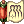
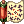
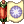
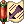
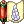
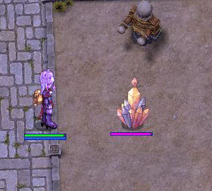

Pruu's Guide to Kagerou/Oboro for PVM
| This guide has not been updated in a while. | ||
|---|---|---|
| Information on this page may be obsolete and outdated. Please refer to the author for information on future updates. |
||
| Kagerou/Oboro | |||||||||||||||||||
|---|---|---|---|---|---|---|---|---|---|---|---|---|---|---|---|---|---|---|---|
 | |||||||||||||||||||
| Job Base: | Ninja | ||||||||||||||||||
| Written By: | Pruu | ||||||||||||||||||
| |||||||||||||||||||
Disclaimer
This guide is intended to be used in NovaRO. While you may find the information here useful for other servers, you may not find the same gears or features that are implemented in NovaRO. Since I have only played Oboro, most of the knowledge on Kagerou’s three exclusive skills are based on available information online that I have reviewed before making this guide. Furthermore, this guide will mostly cover PVM aspect of Kagerou/Oboro while briefly touching the PVP aspect. I highly recommend looking at Nosher’s guide Unveiling the Shadows - A Kagerou/Oboro analysis for more detailed analysis on PVP and list of known bugs in NovaRO with regard to Kagerou and Oboro. Some of the builds mentioned here are inspired from ideas in the previously mentioned guide and its discussion thread.
Overview
Kagerou and Oboro are the 2nd job classes for Ninja. While Kagerou and Oboro have the drawbacks of not being able to transcend (less allocable stat points, smaller HP pool) and get transcendent only gears, they are quite strong and may be able to compete damage wise with the regular 3rd job classes, especially since we can achieve level 175/60 and have access to the same end-game items (such as: Temporal Boots, Faceworm Skins, Heroic Backpack [1], WoE Gears, etc.) here in NovaRO. Furthermore, Kagerou and Oboro have very niche and useful skills which significantly increase their survivability. In fact, it is not unheard-of to see a Kagerou/Oboro/Ninja standing unscathed during a party wipe on end-game dungeons and instances. If you have played ninja previously in pre-renewal, the playstyle of Kagerou/Oboro will be very familiar to you. While keeping the distinct playstyle and flavor of the beloved ninja class, Kagerou/Oboro receive massive steroids to boost their damage capabilities and another survival trick at their disposal.
There are three builds that I will cover in this guide: Magic, Throwing, and Killing Stroke/Rapid Throw. While there are definitely other builds available such as the melee Kagerou and Oboro, I have only tried the three that I have mentioned.
Kagerou vs Oboro
This is probably one of your biggest question when you decide to make this class. While most of their core skills are shared between the two of them, their three exclusive skills set them apart. Kagerou is able to learn Empty Shadow, Shadow Trampling and Shadow Warrior while Oboro receives Distorted Crescent, Ominous Moonlight and Moonlight Fantasy.
In my opinion, Kagerou is more tailored for PVP environment due to their Shadow Trampling and Empty Shadow skills. Shadow Trampling creates a large 13 by 13 AoE around you which unhide hidden enemies and snare them for a short duration, while Empty Shadow nullify reflect ability of a target and may cause target’s skills to fail (untested). Lastly, Kagerou also receive a very unique buff skill, called Shadow Warrior, which allows them to give Double Attack buff to a target. Although this may be quite useful for auto attacking classes, you may find that there are very few classes (including Kagerous themselves) which prefer auto-attack to skill spamming in renewal, limiting the usefulness of this skill.
On the other hand, Oboro is relatively better at PVM since they have one of the best, yet complicated to use, buff which is the Distorted Crescent which give significant amount of ATK/MATK bonus based on the target's current HP and SP. However, it should be noted that Distorted Crescent can also reduce target’s ATK/MATK if used improperly (please refer to the Tips and Tricks section on how to use this skill effectively). Oboro’s two other skills are a bit mediocre due to their very specific requirements. Ominous Moonlight skill allows you to put an inverse healing debuff on a target. Using this skill in tandem with Arch Bishop’s Highness Heal will make the target receive instant 12k+ damage (xD). Oboro’s last skill, called Moonlight Fantasy, randomly restores or drains target HP/SP based on their current HP and SP. Since you can’t really tell the current HP of your enemies, this skill is very situational.
In conclusion, both Kagerou and Oboro have their own unique set of skills that may interest you. If you enjoy PVM more compared to PVP content like I do, I will recommend choosing Oboro for the Distorted Crescent buff. Your party, especially the physical attackers, will love you for this skills and they will even change their max HP just to get this buff. On the other hand, if you like to do PVP more than PVM, Kagerou may have more useful skills at your disposal. Shadow Trampling is a good skill to have especially considering that hiding or cloaking is very common in PVP situation. Furthermore, you can use Empty Shadow to cripple your enemies and making sure that they won’t reflect your damage back.
Notable Skills for All Builds
These skills are useful most of the time regardless of your build.
Ninja Skills
 Cicada Skin Shed
This is a Ninja’s trademark skill that you should use all the time. This skill will allow you to block 1-3 physical hits (including skills) and dodge 7 cells backwards in the process. It should be noted that flee, perfect dodge, Safety Wall, and Kyrie Eleison take priority over this skill. Dodging the hit/skill through those other means will not activate your Cicada Skin Shed. Because of this, I highly recommend keeping decent amount of flee and perfect dodge to increase your survivability.
Cicada Skin Shed
This is a Ninja’s trademark skill that you should use all the time. This skill will allow you to block 1-3 physical hits (including skills) and dodge 7 cells backwards in the process. It should be noted that flee, perfect dodge, Safety Wall, and Kyrie Eleison take priority over this skill. Dodging the hit/skill through those other means will not activate your Cicada Skin Shed. Because of this, I highly recommend keeping decent amount of flee and perfect dodge to increase your survivability.
 Mirror Image This is another great survival skill to have. Under Mirror Image buff, you will be able to dodge 1-5 physical hits/ skills. One Shadow Orb is consumed together with your Ninja Aura buff every time you cast this spell. It should also be noted that both Cicada Skin Shed and Mirror Image will be triggered simultaneously if you have both skills active. Despite of this rather glaring drawback, I find it to be very useful in an MVP party where you can stand still and spam your offensive skills. On other occasions, I will just recommend using Cicada Skin Shed.
 Ninja Aura Extra INT and STR will always be useful no matter what. Furthermore, it is also required to use Mirror Image and Killing Stroke. Using any of those skills will consume your Ninja Aura buff.
 Ninja Mastery Due to your limited SP pool, regenerating SP is always nice. This skill is also a prerequisite for other useful Ninja Skills.
 Shadow Leap
A good mobility skill which can be used in conjunction with Haze Slasher or Kagerou’s/Oboro’s Shadow Hiding.
Shadow Leap
A good mobility skill which can be used in conjunction with Haze Slasher or Kagerou’s/Oboro’s Shadow Hiding.
Watery Evasion [Optional]
This skill create an AoE which will slow enemies’ movement speed and reduce their AGI for a duration, which is very nice if you are dealing with mobs. Furthermore it will also allow Water Ball or Aqua Benedicta to be casted. Despite its strong points, due to the large amount of prerequisites, I only recommend to invest in this skill only if you have spare skill points.
 Flip Tatami [Highly Situational]
This skill create a cross-like AoE which will knockback enemies and create a zone that blocks ranged physical damage for 3 seconds. Due to the 3 seconds after-cast delay, its usefulness is very minimal. However, it may be good enough to replace a Pneuma if so desperately needed. You will need to invest 1 point in it to learn other useful skills.
Flip Tatami [Highly Situational]
This skill create a cross-like AoE which will knockback enemies and create a zone that blocks ranged physical damage for 3 seconds. Due to the 3 seconds after-cast delay, its usefulness is very minimal. However, it may be good enough to replace a Pneuma if so desperately needed. You will need to invest 1 point in it to learn other useful skills.
Kagerou/Oboro Skills
Charm Earth Use this to increase your weapon attack. At lvl 10 you can endow your weapon with Earth Element.
Charm Fire
Use this to boost your Fire Spells. At lvl 10 you can endow your weapon with Fire Element.
Charm Ice
Use this to boost your Ice/Water Spell. At lvl 10 you can endow your weapon with Water Element.
Charm Wind Use this to boost your Wind Spell. At lvl 10 you can endow your weapon with Wind Element.
 Illusion Shadow
It is very useful to redirect monster aggression from yourself. At max level, it can even tank several MVP hits.
Illusion Shadow
It is very useful to redirect monster aggression from yourself. At max level, it can even tank several MVP hits.
 Pure Soul
This is another good survivability skill to have as Kagerou/Oboro. With this skill, I rarely need to bring any HP or SP recovery items on me. While you can’t move during the active effect, you can still use all of your skills which include your mobility skills such as Shadow Hiding and Shadow Leap. Furthermore, you can also use this skill to restore HP/SP even when you are overweight.
Pure Soul
This is another good survivability skill to have as Kagerou/Oboro. With this skill, I rarely need to bring any HP or SP recovery items on me. While you can’t move during the active effect, you can still use all of your skills which include your mobility skills such as Shadow Hiding and Shadow Leap. Furthermore, you can also use this skill to restore HP/SP even when you are overweight.
 Shadow Hiding
This skill allows you to use any Ninja’s skills that require hiding effect. Use this in conjunction with Shadow Leap to move across the battlefield.
Shadow Hiding
This skill allows you to use any Ninja’s skills that require hiding effect. Use this in conjunction with Shadow Leap to move across the battlefield.
 16th Night
This is the best Kagerou’s/Oboro’s skill in my opinion and it is honestly the sole reason why Magic Kagerou and Oboro are viable at all. This skill reduce your fixed cast time by 100% and variable cast time by 50%. However, it should be noted that the Variable Cast Time reduction stack multiplicatively (not additively), which means that you will only reduce your variable cast time to 25% if you combine this skill with 50% reduction from your gears. Having this skill at level 3 is sufficient enough since you will be able to cast it just as your buff runs out.
16th Night
This is the best Kagerou’s/Oboro’s skill in my opinion and it is honestly the sole reason why Magic Kagerou and Oboro are viable at all. This skill reduce your fixed cast time by 100% and variable cast time by 50%. However, it should be noted that the Variable Cast Time reduction stack multiplicatively (not additively), which means that you will only reduce your variable cast time to 25% if you combine this skill with 50% reduction from your gears. Having this skill at level 3 is sufficient enough since you will be able to cast it just as your buff runs out.
 Makibishi [Optional]
Think of it as an AoE Ankle Snare with low damage and shorter snare duration. This skill requires many skill points investment if you are going with Magic Build. Because of this reason and the short snare duration, I only find this skill to be optional.
Makibishi [Optional]
Think of it as an AoE Ankle Snare with low damage and shorter snare duration. This skill requires many skill points investment if you are going with Magic Build. Because of this reason and the short snare duration, I only find this skill to be optional.
 Release Ninja Spell [Optional]
If you keep track of your charms’ duration, this skill is pretty nice to have. You can consume all your charms to deal high elemental damage to a target.
Release Ninja Spell [Optional]
If you keep track of your charms’ duration, this skill is pretty nice to have. You can consume all your charms to deal high elemental damage to a target.
 Cast Ninja Spell [Optional-PVP]
Consume all your charms to create a 5x5 AoE on the ground which inflict various status ailments (depends on the charms consumed) to enemies. You can use this to buff your weapon ATK as well if you are wearing weapon with the same element.
Cast Ninja Spell [Optional-PVP]
Consume all your charms to create a 5x5 AoE on the ground which inflict various status ailments (depends on the charms consumed) to enemies. You can use this to buff your weapon ATK as well if you are wearing weapon with the same element.
Distorted Crescent [Oboro’s Exclusive Skill] This is one of the best damage buff in the game if casted properly. The MATK bonus will be very useful for Magic Oboro while ATK bonus will be useful for Throwing and KS/RT Oboro. Please refer to the Tips and Tricks Section below.
Empty Shadow [Kagerou’s Exclusive Skill- PVP]
This skill is possibly the reason why you choose Kagerou. It remove reflect effect from target. Furthermore, target under the effect of this debuff may have their skills fail to activate. Personally, I have never tried this skill yet since I’m not really a PVP enthusiast and I only have an Oboro at the moment. However, I’m very interested in testing this skill in the near future.
 Shadow Trampling [Optional-PVP]
THis is another reason to choose Kagerou over Oboro. It is a very nice skill to reveal hidden enemies around you in PVP.
Shadow Trampling [Optional-PVP]
THis is another reason to choose Kagerou over Oboro. It is a very nice skill to reveal hidden enemies around you in PVP.
Throwing Builds
Among the three different builds, I personally think that this is the most flexible build and has the easiest time to level and farm with. It is relatively easy to gear up a Throwing Kagerou/Oboro and achieve a high damage output, comparable to other regular 3rd job classes. This is mainly due to the ease of access to Huuma Swirling Petal [2], which is the best weapon for Kagerou/Oboro AoE skill Swirling Petal. Furthermore, with Kagerou’s/Oboro’s elemental charm, you can easily endow your weapon with wind, fire, water, or earth element. You can also buy elemental kunais from vendor to use in conjunction with your Throw Kunai and Kunai Splash skills.
Stats Allocations
Since stats allocations will depend significantly on your equipment, I will only list the stats point in the order of importance for each build. Try to get the necessary breakpoints for your equipments (90 pure stats for Heroic Backpack [1], 120 pure DEX for Temporal DEX Boots, 110 pure STR if you are using Str Glove [1]).
DEX: DEX is used as skill modifier for most of your skills. Furthermore, it also reduce your variable cast time. Together with STR, these two are your most vital stats.
STR: It is another equally important stats since most of your skill depends on STR for their damage formula.
AGI: AGI is used as a skill modifier together with DEX for Swirling Petal skill. Furthermore, this will increase your Flee and also ASPD, which is crucial if you are going with Kunai Splash build.
VIT: High VIT means high HP pool. Since you have many dodging skills such as Cicada Skin Shed, Mirror Image, and Pure Soul, it is of less importance compared to AGI. A good Kagerou/Oboro will rarely get hit by any physical attack.
LUK: Luk will provide small increase in ATK, HIT, FLEE, and Perfect Dodge.
INT: You will rarely need INT since you can regenerate your SP with Pure Soul. Furthermore, you can get significant amount of MDEF by enchanting your Ninja Equipment through Ninja Gear Enchants
Notable Skills
 Dagger Throwing Practice This skill give a slight boost to your Throwing Skills. Furthermore, it is also necessary to have this skill at lv 10 to deal the full damage with Rapid Throw.
 Throw Kunai
Since Throw Kunai is used as prerequisites for most of Kagerou's/Oboro's Throwing skills, you will most likely have this skill at max level already. With relatively short cast delay of 1 second, Throw Kunai is quite reliable if you are fighting a single enemy.
Throw Kunai
Since Throw Kunai is used as prerequisites for most of Kagerou's/Oboro's Throwing skills, you will most likely have this skill at max level already. With relatively short cast delay of 1 second, Throw Kunai is quite reliable if you are fighting a single enemy.
 Kunai Explosion
This is a nice AoE physical skill that you have as a Kagerou/Oboro although it may be rather tricky to use due to its relatively small AoE (3x3), short cast range, and rather long cast time. Use this when Swirling Petal is on cooldown to increase your overall damage output. It should be noted that this skill relies heavily on your base and job level as its damage modifier, making it less useful on lower level.
Kunai Explosion
This is a nice AoE physical skill that you have as a Kagerou/Oboro although it may be rather tricky to use due to its relatively small AoE (3x3), short cast range, and rather long cast time. Use this when Swirling Petal is on cooldown to increase your overall damage output. It should be noted that this skill relies heavily on your base and job level as its damage modifier, making it less useful on lower level.
 Swirling Petal
This skill enables Throwing Kagerou/Oboro to farm quite nicely. It hits very hard and has a decent AoE damage and size. This will be your primary skill as a Throwing Kagerou/Oboro. I highly recommend getting it to level 5 as soon as possible.
Swirling Petal
This skill enables Throwing Kagerou/Oboro to farm quite nicely. It hits very hard and has a decent AoE damage and size. This will be your primary skill as a Throwing Kagerou/Oboro. I highly recommend getting it to level 5 as soon as possible.
 Kunai Splash [Optional- Alternative AoE Farming]
This is another useful AoE skill to have, especially considering that it has a negligible after-cast delay. However, due to the horrendous weight of Kunais in the game, you will have a hard time carrying enough of them to use this skill effectively. Each cast will consume 8 kunais to damage enemies in 11x11 cells at level 5. I strongly recommend using Swirling Petal instead of this for levelling purposes, mainly due to the high cost associated with gears and consumables. At this moment, Kunai Splash is considered Melee Attack and it only gets bonus damage from your stats (STR,DEX,LUK), %ATK modifier from gears, and racial ATK modifier from your main-hand weapon.
Kunai Splash [Optional- Alternative AoE Farming]
This is another useful AoE skill to have, especially considering that it has a negligible after-cast delay. However, due to the horrendous weight of Kunais in the game, you will have a hard time carrying enough of them to use this skill effectively. Each cast will consume 8 kunais to damage enemies in 11x11 cells at level 5. I strongly recommend using Swirling Petal instead of this for levelling purposes, mainly due to the high cost associated with gears and consumables. At this moment, Kunai Splash is considered Melee Attack and it only gets bonus damage from your stats (STR,DEX,LUK), %ATK modifier from gears, and racial ATK modifier from your main-hand weapon.
 Rapid Throw [Optional- PVP]
This skill deal 50k-100k defense-piercing damage to enemies within 5x5 cells at level 5. While you can easily kill other players (even including the fully geared ones) with this skill, it comes with a great cost of 100k Zenny. If you are interested in PVP, you should definitely get this skill; however, you should definitely prepare your heart to see your 100k Zenny gone within 1 mouse click.
Rapid Throw [Optional- PVP]
This skill deal 50k-100k defense-piercing damage to enemies within 5x5 cells at level 5. While you can easily kill other players (even including the fully geared ones) with this skill, it comes with a great cost of 100k Zenny. If you are interested in PVP, you should definitely get this skill; however, you should definitely prepare your heart to see your 100k Zenny gone within 1 mouse click.
Equipments
Headgears
- Airship Captain's Hat [1] (Upper): The +7% ranged attack bonus easily makes this hat to be the best Upper Headgear that you can wear.
- Rideword Hat [1] (Upper): Very nice alternative to Airship Captain's Hat [1] (Upper) which will allow you to restore HP and SP on a small chance. If you manage to refine it to +9, the activation chance will be higher. This headgear can be crafted through Custom Headgear Questsquest.
- Asgard Blessing [1] (Upper): An overall decent headgear for any class which give +2 to all stats and +5% resistance to all elements.
- Any Slotted Mid Headgear: You will need this to put your Dark Pinguicula Card.
- Angel Spirit (Mid): A nice Mid Headgear which give you 2% ATK bonus, 2% Matk bonus and +2 STR.
- Robo Eye (Mid): An overall decent Mid Headgear with 2% ATK bonus, 2% Matk bonus and +1 DEX.
- Gangster Scarf (Lower): A very solid choice for any physical attacker with its +5 ATK bonus. This can also be crafted through Custom Headgear Questsquest.
- Pirate Dagger (Lower): Same bonus as Gangster Scarf. I see no reason to choose this over the relatively cheaper Gangster Scarf (Lower).
- Headgear Card
- Dark Pinguicula Card: Extra 10 ATK bonus will always be desirable under all situations.
- Any cards which provides resistance to status ailments
Main-Hand Weapon
- Huuma Swirling Petal [2]: This is the best weapon for Swirling Petal with 150 ATK and +20% damage from Swirling Petal. Furthermore, you can also do a decent damage with Kunai Explosion if it is combined with 2 Archer Skeleton Card. The only drawback is that it is only a level 3 weapon.
- Faceworm Queen Leg [2]: A level 4 Dagger with 180 ATK and two card slots. If, for some reason, you dislike Swirling Petal and prefer to get as much damage as possible with Kunai Explosion and Throw Kunai instead, this is most likely be the best main-hand weapon that you can get.
- Grimtooth [EA 4/EA 4]: An alternative weapon to Faceworm Queen Leg [2] which has the same 180 ATK value. Expert Archer enchant should be used to compensate for the lack of card slot.
- Weapon Card
- Archer Skeleton Card: The +10% ranged attack bonus easily makes this the best weapon card for general purposes
- ATK boosting Card
Off-Hand Weapon (for Throw Kunai and Kunai Explosion)
- Main Gauche [4]: Even though Main Gauche [4] looks a bit lacklustre, it is one of the best off-hand weapon due to its 4 card slots which allows you to socket it with all of your racial damage boosting cards.
- Weapon Card
- Archer Skeleton Card: A very solid weapon card that you can get for any ranged physical attackers. Enough said.
- Racial Bonus Card
Armor
- Tenebris Latitantes [1]: This is a really good armor which is exclusive to Kagerou/Oboro/Ninja class. It will allow you to auto-cast Illusion Shadow with a low chance. Please refer to Tips and Tricks section on how to obtain and enchant this equipment.
- Special Ninja Suit: A decent and relatively cheap armor that you can use while trying to get Tenebris Latitantes [1]. This armor will give additional AGI based on refine level.
- Glittering Jacket [1]: A standard armor with a card slot. This armor can also be enchanted for extra Stats point through Hidden Enchant.
- Armor Card
- Porcellio Card: This is a very solid card for any physical attackers which give 25 ATK bonus with a slight drawback of -5 DEF.
- Any Elemental Card
- Any Status Ailments Resistance Card
Garment
- Heroic Backpack [1]: A decent garment all-around. Just make sure to refine it to at least +7 and get the stats prerequisites for the bonuses.
- Faceworm Skins: Another solid garment. It is a more specialized option compared to Heroic Backpack [1]
- Garment Card
- Menblatt Card:This card will give you +1% ranged attack bonus for every 10 pure DEX. More ranged attack bonus means more damage for all three of your primary damage skills: Swirling Petal, Kunai Explosion, and Kunai Splash.
- Raydric Card: You can never go wrong with Raydric Card. Its 20% Neutral resistance will give you more survivability whenever you forget to renew your Cicada Skin Shed buff in time.
Footgear
- Temporal Dex Boots [1] [EA4]: This is most likely be the best boots for Throwing build due to its extra %ranged attack bonus. Try to get this as soon as you can.
- Hero Silverleather Boots [1]: A decent alternative to get while saving up for your Temporal Dex Boots [1]. I don't recommend trying to over-refine it to get the secondary bonus. It's most likely better to use your Zenny and Enriched Elunium somewhere else.
- Enhanced Variant Shoes [1]: A solid all-around shoes which give you +12% MaxHP and MaxSP. Furthermore, it also come with a card slot.
- Shackles: You can use this in combination with Bloodied Shackle Ball for +50 ATK.
- Footgear Card
- Firelock Soldier Card: This is the best footgear card for general purposes if you manage to have a +9 footgear. It will give +10% MaxHP, +10% MaxSP, and +2 STR
- Gold Acidus Card or Verit Card: They have slightly weaker effect compared to Firelock Soldier Card with only 8% MaxHP and 8% MaxSP; however, they are acceptable for most cases.
- Green Ferus Card or Matyr Card: These two will give +10% MaxHP and +1 to a certain stat
Accessories
- Bakonawa Agimat Tattoo: This accessories give +7% attack damage to all monster sizes and +10% ASPD. While the % attack damage bonus is very tempting for Throwing Kagerou/Oboro, it is relatively hard and tedious to get this accessories. Please refer to this Pintados Festival guide in the wiki.
- Str Glove [1]: Since you will most likely have high STR for this build, I strongly recommend using this glove as it give you ATK+1 for every 10 pure STR and ATK+1% when STR is 110 and higher.
- Silversmith Bracelet [1]: It is a good all-around accessories which give +1 to all stats, 3 MDEF, and access to LV5 Spell Breaker.
- Medal of Honor (Thief) combo with Glorious Ring or Glorious Popularized Ring: This is a very nice combo that you can get from Battlegrounds. It will give you bonus damage and other nice bonuses.
- Bloodied Shackle Ball: Using this accessory in combination with Shackles will give you +50 ATK.
- Black Rosary [1]: Since you can dodge most physical attacks with your skills, you will most likely need to worry solely on magic attack in PVM. With +15 MDEF, Black Rosary [1] is a really good defensive option.
- Accessories Card
- Gold Scaraba Card: More ATK means more damage on all of your physical skills. The +20 ATK bonus definitely deserve its relatively high price.
- Creamy Card: I personally like to have at least 1 Creamy Card on most of my farming characters. Teleport skill is always handy when you are farming. Furthermore, you will never run out of SP with Pure Soul
- Zerom Card: Since DEX is used on most of your skills as a damage modifier, the +3 DEX bonus from this card can be useful
- Mantis Card: This card give you +3 STR which can boost your damage slightly. You can use this while saving up for Gold Scaraba Card.
Magic Builds
16th Night skill allows Kagerou and Oboro to cast their spell instantly if they manage to get 100% Variable Cast Time reduction. Because of this reason, it is possible to spam your 0 cast delay spells (Flaming Petals, Freezing Spear, and First Wind) as fast as what your ASPD allows you to. Furthermore you can also utilize monsters’ elemental weaknesses and use your charms to boost your magic damage even further. While this build can easily surpass Throwing build in damage output, it is relatively expensive to make a Magic Kagerou/Oboro. You will also find yourself to be a bit useless when fighting monsters or MVPs with Shadow or Holy element.
Investing in a magic Kagerou/ Oboro can cost a fortune. With the addition of Airship's Assault and Devil's Tower instances, getting 100% Variable Cast Time reduction in NovaRO is currently achievable with gears only.
Stats
INT: This will be your primary stats as it increase your damage and reduce your cast time. Try to get it as high as possible or at least to a breakpoint for your Temporal Int Boots [1].
DEX: DEX is mostly used to reduce your cast time. The magic number that you should aim for instant cast is 530(which should equal to 2*DEX +INT) after foods and buffs. If you can get 100% Variable Cast Time reduction from your gears only, you can leave DEX at 1 and put your points somewhere else
AGI: Similar to Throwing build, this is an important stats to have for your survivability. Furthermore, since most of your damage spells will have 0 after-cast delay, ASPD will be a huge factor in determining how fast you can spam them.
VIT: Similar to Throwing Build, high VIT means high HP pool. Since you have many dodging skills such as Cicada Skin Shed, Mirror Image, Pure Soul, it is of less importance compared to AGI. A good Kagerou/Oboro will rarely get hit by any physical attack.
LUK: Provide small increase in MATK, HIT, FLEE, and Perfect Dodge. They are all pretty nice and you should invest in LUK if you have some spare points.
STR: For Magic Kagerou/Oboro, STR is not really required since you can easily restore your HP and SP using Pure Soul even if you are above 50% weight limit.
Notable Skills
 Flaming Petals
This will be your go-to spell most of the time. Flaming Petals has 0 after-cast delay and has an insane scaling with your Charm Fire. Because of these reasons, you will be very deadly against enemies who are weak to fire element.
Flaming Petals
This will be your go-to spell most of the time. Flaming Petals has 0 after-cast delay and has an insane scaling with your Charm Fire. Because of these reasons, you will be very deadly against enemies who are weak to fire element.
 Freezing Spear This is the second 0 after-cast delay spell that you have access to. While it scales worse compared to Flaming Petals with Charm Ice, it will still hits really hard against enemies who are weak to Water.
First WInd As the third spell which has negligible after-cast delay, First Wind should be used when you are facing enemies who are weak to Lightning element. This spell also has a decent AoE which allows you to quickly dispose of your enemies in a line. Each cast will require 1 Wind Stone. Similar to the other two spells mentioned, you can use Charm Wind to boost its damage.
 Blaze Shield
While Blaze Shield won’t deal massive amount of damage, it is your best way to activate your Isilla Card Effect. Please refer to Tips and Tricks Section. Each cast will require 1 Flame Stone
Blaze Shield
While Blaze Shield won’t deal massive amount of damage, it is your best way to activate your Isilla Card Effect. Please refer to Tips and Tricks Section. Each cast will require 1 Flame Stone
Exploding Dragon [Optional] This is a nice AoE Fire Spell which you can use when you are levelling. While Exploding dragons scales quite well with Charm Fire, the 3 seconds cast delay is somewhat unfortunate. Each cast will require 1 Flame Stone
 Snow Flake Draft [Optional]
This AoE Water Spell can leave your enemies frozen which may be useful in some situation. Each cast will require 1 Ice Stone
Snow Flake Draft [Optional]
This AoE Water Spell can leave your enemies frozen which may be useful in some situation. Each cast will require 1 Ice Stone
 Wind Blade [Optional]
This is your first Wind Elemental spell that you can learn. As a single target spell, this is quite decent for levelling purposes since you don’t need to spend any Wind Stone to cast it. Even though Wind Blade scales much nicer with Charm Wind compared to First Wind, there is a cast delay on this spell, making it less useful compared to http://irowiki.org/wiki/Flaming_Petals Flaming Petals], Freezing Spear, and First Wind
Wind Blade [Optional]
This is your first Wind Elemental spell that you can learn. As a single target spell, this is quite decent for levelling purposes since you don’t need to spend any Wind Stone to cast it. Even though Wind Blade scales much nicer with Charm Wind compared to First Wind, there is a cast delay on this spell, making it less useful compared to http://irowiki.org/wiki/Flaming_Petals Flaming Petals], Freezing Spear, and First Wind
Lightning Jolt [Optional] Lightning Jolt has a much bigger AoE compared to First Wind; however, it has a relatively lower base damage. This spell also has 0 after-cast delay
Equipments
Headgears
- Crown of Deceit [1] (Upper, Middle): This item will give you bonus to INT, Dex, %MATK, and Variable Cast Time Reduction, especially if refined to +7 and higher.
- Skull Cap [1] (Upper): This item will give you a decent amount of %MATK bonus, especially if refined to +7 and higher.
- Black Frame Glasses [1] (Mid):This slotted headgear give +1 INT, +2 MDEF, and a card slot.
- Any slotted Mid Headgear: You can replace Black Frame Glasses [1] with any Mid Headgear. While the bonuses from Black Frame Glasses [1] are definitely desirable, the card slot is what you are really aiming for.
- Rainbow Scarf (Lower): This is a very good Lower Headgear which gives you +1 INT, +1% MATK, and MDEF +2.
- Ninja Scroll(Lower): This is a slightly weaker version of Rainbow Scarf (Lower) with only +1% MATK.
- Headgear Card
- Kathryne Keyron Card: If you have a highly refined headgear, the Variable Cast Time Reduction from this card can be really beneficial.
- Isilla Card: Using two Isilla Card will double your activation chance. Furthermore, the effect can stack with one another making your cast time negligible when you pull this off. Isilla's card activation will be really handy if you can't get 100% Variable Cast Time Reduction purely from gears yet.
- Darklord Essence Intelligence3 or Darklord Essence Vitality3: Compared to the other essences, Int3 and Vit3 are highly desirable due to their great secondary effects. Due to the rarity of +MATK or +MDEF effects in cards, these two essences are recommended for any slots.
- Any Status Ailments Resistance Card
Weapon
- Bazerald [Spell4,Spell4]: With 105 MATK and +5 INT bonus, this lv.4 weapon is quite decent. However, its best selling point comes from its Malangdo Enchants capability. The MATK and Variable Cast Time reduction bonus from [Spell4,Spell4] easily make this the best main-hand weapon for Magic Kagerou/Oboro.
- Evil Slayer Stabber Dagger [1] [Spell4+,Spell4+,Spell4+ ]: With the possibility of getting more than 20% variable cast time reduction, this dagger has the potential to be your best off-hand weapon.
- Faceworm Queen Leg [2]: A level 4 Dagger with 120 MATK, +3 INT, and two card slots. This is most likely be your best alternative to a fully enchanted Bazerald.
- Mikatsuki [1]: A much cheaper alternative compared to an enchanted Bazerald and Faceworm Queen Leg [2]. This lv 4 Ninja-exclusive Dagger has 120 MATK, 5% Variable Cast Time Reduction, and 5% SP consumption reduction. Please refer to Tips and Tricks on how to obtain and enchant this weapon.
- Main Gauche [4] (Off-Hand): Even though Main Gauche [4] looks a bit lacklustre, it is one of the best off-hand weapon due to its 4 card slots which allows you to socket it with all of your racial magic damage boosting cards.
- Weapon Card
- Darklord Essence Intelligence3 or Darklord Essence Vitality3
- Any Racial Magic Damage Bonus Card
- Any Status Ailments (from Magic Damage) Inflicting Card
Shield
While dual-wielding a dagger may be a better offensive option, you can also use an armguard or a shield to increase your survivability. I'm suggesting the following gears if you prefer to use shield.
- Crescent Armguard [1]: This Ninja-exclusive shield can be enchanted to get additional stats,DEF,or MDEF bonus. Please refer to Tips and Tricks section on how to obtain and enchant this equipment.
- Valkyrja's Shield [1]: This is my personal go-to shield for Kagerou/Oboro. As I've mentioned previously, you will most likely need to care only about magical damage in PVM due to your Cicada Skin Shed and Mirror Image skills. The +20% resistance bonus to Fire, Water, Shadow, and Undead element is definitely a welcome addition to your already stellar defensive capabilities.
- Shield Card
- Hodremlin Card: This card reduce damage from monsters of all sizes by 15% and give you a low chance to increase Perfect Dodge by 30. This is definitely a solid all-around defensive card, which is only slightly inferior to the famous Khalitzburg Knightage Card.
- Darklord Essence Intelligence3 or Darklord Essence Vitality3
- Any Elemental Resist Card
- Any Racial Resist Card
Armor
- Tenebris Latitantes [1]: This is a really good armor which is exclusive to Kagerou/Oboro/Ninja class. It will allow you to auto-cast Illusion Shadow with a low chance. Please refer to Tips and Tricks section on how to obtain and enchant this equipment.
- Special Ninja Suit: A decent and relatively cheap armor that you can use while trying to get Tenebris Latitantes [1]. This armor will give additional AGI based on refine level.
- Glittering Jacket [1]: A standard armor with a card slot. This armor can also be enchanted for extra Stats point through Hidden Enchant.
- Armor Card
- Darklord Essence Intelligence3 or Darklord Essence Vitality3
- Any Elemental Card
- Any Status Ailments Resistance Card
- Any Status Ailments Inflicting Card
Garment
- Ferlock's Cloak [1]: This is the best in slot for the Magic Build due to the possibility of getting 30% or 35% Variable Cast Time Reduction at +9 or +12 refinement level respectively. You should always try to refine this garment to +9; otherwise, Cloak of Airship [1] is a better alternative.
- Cloak of Airship [1]: A really good garment which has the same bonus as a +7 Ferlock's Cloak [1].
- Heroic Backpack [1]: A decent garment all-around. Just make sure to refine it to at least +7 and get the stats prerequisites for the bonuses.
- Faceworm Skins: Another solid garment. It is a more specialized option compared to Heroic Backpack [1]
- Garment Card
- Antique Book Card:This card will give you +5 MATK bonus for every 10 pure INT. This is the best offensive card for garment slot.
- Raydric Card: You can never go wrong with Raydric Card. Its 20% Neutral resistance will give you more survivability whenever you forget to renew your Cicada Skin Shed buff in time.
- Darklord Essence Intelligence3 or Darklord Essence Vitality3
Footgear
- Temporal Int Boots [1] [Spell9]: This enchanted Temporal Boots will give you a massive +100 MATK (for +4 refinement level) and 10% Variable Cast Time Reduction if you have at least 120 Pure Int.
- Hero Nependess Shoes [1]: The Variable Cast Time reduction bonus makes this footgear a decent alternative to get while saving up for your Temporal Int Boots [1]. I don't recommend trying to over-refine it to get the secondary bonus. It's most likely better to use your Zenny and Enriched Elunium somewhere else.
- Enhanced Variant Shoes [1]: A solid all-around shoes which give you +12% MaxHP and MaxSP. Furthermore, it also come with a card slot.
- Footgear Card
- Firelock Soldier Card: This is the best footgear card for general purposes if you manage to have a +9 footgear. It will give +10% MaxHP, +10% MaxSP, and +2 STR
- Gold Acidus Card or Verit Card: They have slightly weaker effect compared to Firelock Soldier Card with only 8% MaxHP and 8% MaxSP; however, they are acceptable for most cases.
- Green Ferus Card or Matyr Card: These two will give +10% MaxHP and +1 to a certain stat
- Darklord Essence Intelligence3 or Darklord Essence Vitality3
Accessories
- Int Glove [1]: Since you will most likely have high INT for this build, I strongly recommend using this glove as it give you MATK+1 for every 10 pure INT and MATK+1% when STR is 110 and higher.
- Buwaya Agimat Tattoo: This accessories give +7% MATK and +7% Fixed Cast Time reduction. While the %MATK bonus is always nice to have, you don't really need any Fixed Cast Time reduction because of your 16th Night skill. Please refer to this Pintados Festival guide in the wiki.
- Silversmith Bracelet [1]: It is a good all-around accessories which give +1 to all stats, 3 MDEF, and access to LV5 Spell Breaker.
- Medal of Honor (Thief) combo with Glorious Ring: This is a very nice combo that you can get from Battlegrounds. It will give you bonus %MATK and also a 3% Variable Cast Time Reduction
- Black Rosary [1]: Since you can dodge most physical attacks with your skills, you will most likely need to worry solely on magic attack in PVM. With +15 MDEF, Black Rosary [1] is a really good defensive option.
- Accessories Card
- Scaraba Card: The +20 MATK bonus means more damage on all of your spells, which is highly desirable.
- Creamy Card: I personally like to have at least 1 Creamy Card on most of my farming characters. Teleport skill is always handy when you are farming. Furthermore, you will never run out of SP with Pure Soul even if you are overweight.
- Zerom Card: The +3 DEX bonus fromt his card is desirable, especially if you are trying to reach the 530 Instant Cast breakpoint.
- Darklord Essence Intelligence3 or Darklord Essence Vitality3
Killing Stroke/Rapid Throw Build
This is mainly a PVP build. The idea behind this build is to nuke your enemies with Killing Stroke in combination with Rapid Throw to quickly kill them. With decent equipments, you can easily deal 50k+ to a geared players with Killing Stroke in PVP. Rapid Throw can also deal significant defence-piercing damage to enemies in a small AoE.
Overall, I think KS/RT Kagerou/Oboro has some potential in PVP. However, as a mainly PVM player, I find it tough to compete with others, most likely due to my own shortcomings or lack of knowledge in PVP meta-game. There are several PVP aspects which doesn’t help Kagerou/Oboro as well, especially on Battlegrounds and WoE. Shadow Leap is useless in Battlegrounds as it just unhides you on the spot. One of the most commonly used skill in PVP, Acid Bomb, bypasses your Cicada Skin Shed and Mirror Image protection. Last but not least, both of your means of killing the enemies are counted as physical ranged damage, meaning that a good Sura, Arch Bishop, and Sorcerer can block your skills with Pneuma and Wall of Fog. Magic Kagerou/Oboro is not really an option in pvp due to the telegraphic nature of the charms (e.g. with 10 floating fire charms, your enemy can just put on their fire armor and easily nullify your damage). For a more detailed guide on PVP aspect of Kagerou/Oboro, I highly recommend reading Nosher’s guide Unveiling the Shadows - A Kagerou/Oboro analysis.
Stats
STR: STR will be your primary stats as it will increase your Killing Stroke damage. Rapid Throw damage is purely from the amount of Zenny that you spent.
VIT: In addition to the typical survivability value, your HP pool will be used as a skill modifier for Killing Stroke. I highly recommend prioritizing both STR and VIT for this build since you will most likely use Killing Stroke as your primary means of dealing damage.
DEX: Together with LUK, it will increase the probability of hitting Rapid Throw. Furthermore it will also reduce your variable cast time slightly.
LUK: As mentioned above, LUK will also increase your hit chance with Rapid Throw. I highly recommend getting roughly equal amount of Dex and LUK for this build since they both contribute equally to your hit chance.
AGI: This will help increase your flee rate. However, since this is primarily a PVP build, you can definitely ignore this stat.
INT: This is another dump stats for this build. Since your primary damage skill is based on ATK, you will rarely need to allocate point in INT.
Notable Skills
Equipments
Instead of mentioning similar gear recommendations to what Nosher has excellently covered in his guide, I will once again recommend you to read his Unveiling the Shadows - A Kagerou/Oboro analysis. I'm not really a fan of PVP in renewal, especially considering that you have too few wiggle room outside of the standard WoE sets and other demi-human reduction gears and cards. The damage reduction from WoE sets is too essential to be replaced by other gears.
Tips and Tricks
Obtaining Ninja Gears
Huuma Swirling Petal
You can get your best throwing weapon, Huuma Swirling Petal [2], from both Incubus and Succubus in Geffenia. Since this location is also famous as one of the best Zenny farming location, I strongly recommend any Throwing Kagerou/Oboro to start farming here as soon as possible to get a highly refined Huuma Swirling Petal [2]. The notable loots here are Mastela Fruit, Royal Jelly, Diamond Ring, Gold Ring , Gold Ring, White Herb, and Abysmal Knight Card. If you have a Huuma Calm Mind [2] and 100 Broken Shuriken with you, you can also exchange them through Ninja Weapon Quest.
Mikatsuki
While a fully enchanted Bazerald can outclass a Mikatsuki [1], you won’t need to spend significantly large amount of zenny to get it. As a weapon level 4 with 120 MATK, it is also comparable to a Faceworm Queen's Leg [2], especially considering that you can enchant the third and fourth slot of your Mikatsuki [1]. I will suggest all Magic Kagerou/Oboro to use this lovely dagger as their starting weapons. You can get Mikatsuki [1] by exchanging 1 Hakujin [1] and 1 Opal through Ninja Weapon Quests.
Wolf Armguard, Crescent Armguard, Ninja Scale Armor, Tenebris Latitantes
All of these items can be obtained through Ninja Equipment Quests. The two armguards have relatively good effects which you may find useful for Throwing or Magic Build. Ninja Scale Armor [1] may be one of the better armor for Killing Stroke due to its % maxHP bonus and a card slot even though it will be really tedious for you to farm the required MVP items to get it. Last but not least, you can also get the best all-around armor for Kagerou/Oboro Tenebris Latitantes [1] from this quest.
Most of the required items can be farmed from monsters or bought at the Ninja Guild. To get Special Ninja Suit [1], you will need to Socket Enchant your regular Special Ninja Suit by talking to Leablem. It should be noted that Special Ninja Suit is listed under A-Rank armor.
Ninja Gear Enchants
It is possible to enchant your Ninja gears through Ninja Gear Enchants. Each enchanting attempt cost 100k Zenny and each equipment can be enchanted twice. The enchantments that you can get are random; however, you can pay another 100k Zenny to reset either only your last enchantment or both of your enchantments. I highly recommend enchanting for INT/DEX to improve your damage and cast time or MDEF to increase your overall survivability. With Cicada Skin Shed and Mirror Image at your disposal, you will only need to worry about magical attacks most of the time (it’s more complicated in PVP).
Using the Zero After-Cast Delay Spells
There are four spells with zero after-cast delays which you can learn: Flaming Petals, Freezing Spear, First Wind, and Lightning Jolt. Among those four spells, you will typically only use the first three to cover your elemental spell repertoire due to their relatively superior base damage. By using the 16th Night and high variable cast rate reduction, you can spam these spells repeatedly as seen below.
 Casting Flaming Petals Repeatedly |
 Casting Freezing Spear Repeatedly |
 Casting First Wind Repeatedly |
Using Elemental Charms
You should use elemental charms to boost your damage or endow your weapon, regardless of your build. Charm-Earth boost your weapon ATK, Charm-Fire boost your Fire Spells, Charm-Wind boost your Wind Spells, and Charm-Ice boost your Ice or Water Damage. Each Spell is affected differently by their corresponding Charm. Flaming Petals with 10 Fire Charms will probably be your default spell as the 10 Charms effectively triple your damage.

Furthermore, having 10 of the same charms active on you will endow your weapon with that element. Because of this reason, as a Throwing Kagerou/Oboro, I usually only use 9 Earth Charms if I don’t want to endow my weapon with Earth Element.
Casting Distorted Crescent
This the most important skill to have as an Oboro and yet it is the most frustrating one to use. One of the easiest way to get the ATK buff is by making sure that your Max HP is even. By doing so, you can ensure the buff by using Pure Soul to recover your HP and then cast Distorted Crescent on yourself. If you are in a party with other people, try to always have your Party Window open to see the current HP of your teammates. Most physical attackers will see a huge jump in their damage and they will definitely love you for it. To make my job easier, I usually only use this buff on players with even Max HP and wait until they are fully healed before casting this spell.
While it is relatively straightforward to use Distorted Crescent to buff your ATK, it is very frustrating to use it on your Magic Oboro. To get the MATK bonus, you will need to have even current SP by the time you finish casting Distorted Crescent (Not before Casting the Skill!). Because of this, I will recommend having odd Max SP and casting it right after you have recovered all of your SP using Pure Soul and before using 16th Night. This is very important because 16th Night will continuously drains your SP and most likely screw up your timing.

What happen if you are in the middle of 16th Night buff then? There is no real easy way to handle this situation as it all depends on your Distorted Crescent cast time. For my Oboro, I can manage to cast Distorted Crescent in less than 1 second, meaning that I can wait my SP to be at an odd number and then quickly cast the spell. Some of you may find it better to cast it when your current SP is at an even number. Practice makes perfect.
Utilizing Blaze Shield to Activate Isilla Cards and Runaway Magic/Lucky Day Temporal Boots Effect
I think Blaze Shield is a bit underrated on Magic Kagerou/Oboro. While it is not as good as Mage’s Fire Wall, you can utilize this spell to quickly activate your Isilla Card and Runaway Magic or Lucky Day Temporal Boots enchantment. If you use it to damage 3+ enemies, you will most likely get the bonus effect on you.

Moving with Pure Soul
Pure Soul allows you to regenerate your HP and SP at a rapid rate. Furthermore, you will also have chance to dodge any physical and magical attack. As good as it may sound, it comes with a huge drawback. Under this effect, you can’t manually move your character. This is the main reason why Shadow Hiding and Shadow Leap skills are crucial for any Kagerou/Oboro.

General Early Levelling Guide
This is what I do to quickly level up all of my characters, not exclusive to Kagerou/Oboro. Please note that this is my personal preference and you can definitely grind somewhere else or do other quests than the one mentioned below.
Level 1-8: Get off Airship and talk to Hun in front of the Criatura Academy. Drink the apple juice and talk to him again. Enter the Academy afterwards and register to get to level 8 and job level 10. You should be able to change into your first job class (Ninja) before continuing further. Prioritize on increasing your STR, followed by AGI and DEX since you will use Throwing Skills to level up in the early game.
Level 8-9: Go one map South of Prontera and kill Porings here until you reach level 9 or have enough skill points on your first damage skill (I will suggests getting Throw Shuriken for Ninjas, Double Strafe for Archers, Bash for Swordmen, Napalm Beat> Soul Strike for Mages, Heal for Acolytes, etc.)
Level 9-26: Warp to Payon Dungeon and kill zombies there with Throw Shuriken. Try to get Throw Shuriken to level 5 and work towards Throw Kunai, followed by Cicada Skin Shed. You can buy Heat Wave Kunai to help you kill Skeletons in there. For other classes, you should work towards your AoE skills (Arrow Shower for Archers, Magnum Break for Swordmans, Fire Wall for Mages, etc.). If you are playing Merchant, you will only need Cart Revolution until you hit level 85 if you max your cart weight. Sadly, Acolytes can only rely on Heal to kill undead enemies; however, it should be alright if you follow this levelling guide.
Level 26-32: Go to eden (@go eden) and join the Eden Group by talking to Secretary Lime Evenor. After joining Eden Group, talk to Instructor Boya to get the quest in Payon Dungeon. The Eden NPC Karl for the quest (Karl) can be found just outside the dungeon. Follow the quest chain and kill the instructed mobs until he sends you back to Instructor Boya. After talking to Boya, you can receive your Eden Gears from Administrator Michael by entering the Iron Door to your right and taking the North warp.
Level 32-70: You can either go with your current build and spam Throw Kunai or reset your Stats and Skills to Magic Build. If you prefer Magic Build, you should get INT, followed by DEX, and get Blaze Shield and Exploding Dragons to kill mobs more effectively. Personally, I prefer to just stick with Throw Kunai since you can easily kill any mobs that you desired with elemental Kunais. Warp to Orc Dungeon and start levelling there with your AoE skills to get to level 70. There is another Eden Equipment Quest in this dungeon which you can get from Instructor Boya at level 50-59.
Level 70-85: It is now the time to do another Eden Equipment Quest. Talk to Instructor Ur and get the quest in Glast Heim. You can find the NPC at Glast Heim St. Abbey. Just follow the quest line until you can claim your rewards. You should have no problem to one-shot Wraiths and Evil Druid with 90ish STR as a Ninja. You can use this chance to try your luck in getting Evil Druid Card which can fetch a good amount of Zenny.
Level 85-99: You can either find Gramps party now or do board quests in Eden. To do gramps, take the hunting quests at Monthly Hunt Quest Board at the NorthWest Corner in Eden HQ. After that you can speak to gramps to warp you to the hunting location. Alternatively, you can just do other board quests in Eden. Keep in mind that you can take another Eden Equipment quest at level 90 to enchant your Eden Weapon.
Level 99+: You can now change into a Kagerou/Oboro and should be able to hunt wherever you want. Gramps is always a nice place to get levels especially if you get a good party. I will suggest learning Swirling Petal, 16th Night, Distorted Crescent (Oboro), Elemental Charms, and Pure Soul as soon as possible for Throwing Kagerou/Oboro. Those skills, with the exception of Swirling Petal, are also very important for Magic Kagerou/Oboro.